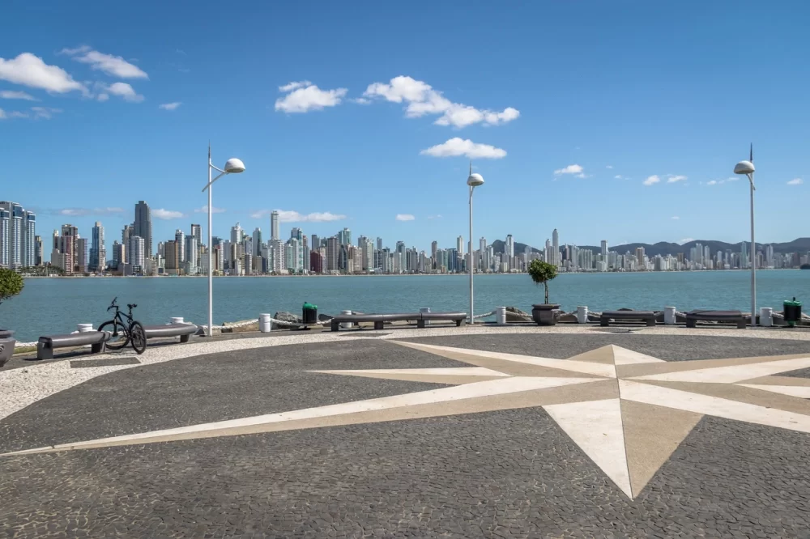
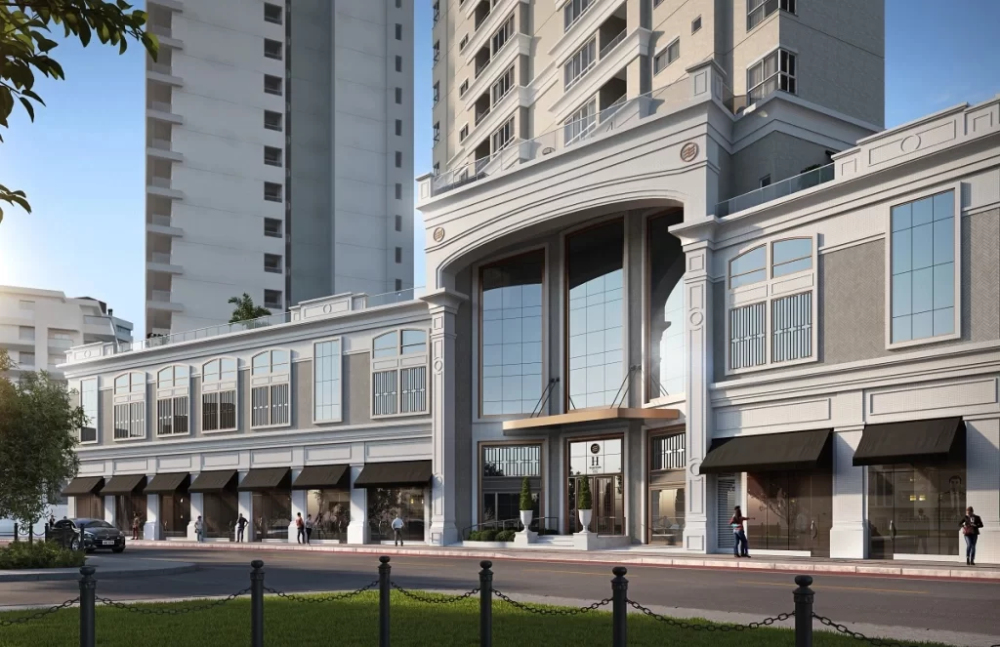
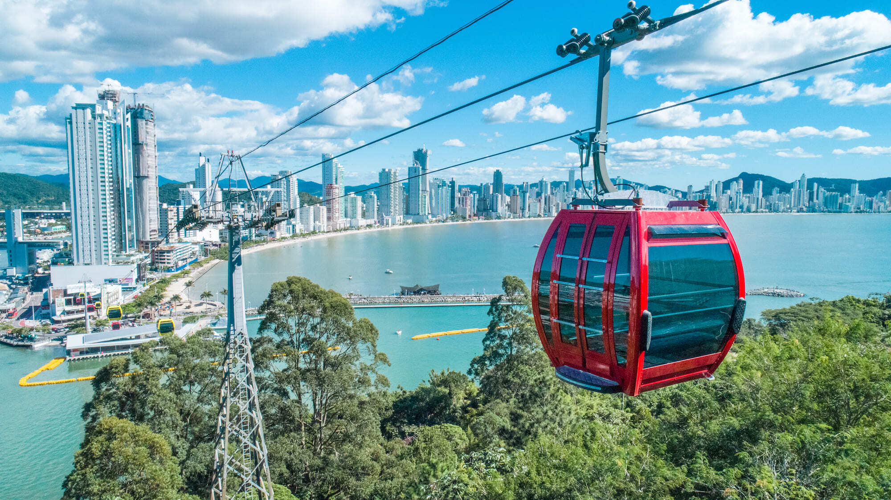
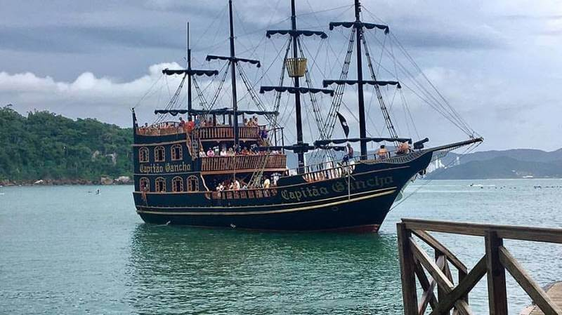
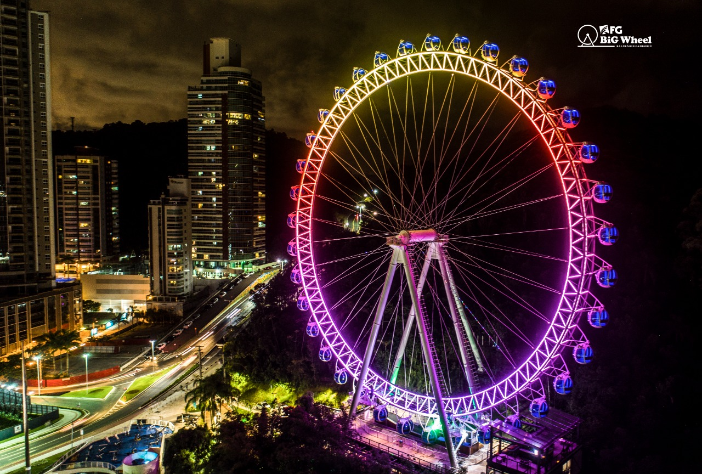

Entre as cidades com até 500 000 habitantes, Balneário Camboriú é a quarta melhor para viver no Brasil, considerando o Índice de Desenvolvimento Humano (IDH), que leva em conta renda, educação e saúde. Os 124 000 moradores vivem 78,62 anos, média três anos mais alta do que a do Brasil e equivalente à registrada nos Estados Unidos. A cidade é também a mais segura do estado de Santa Catarina e a 16ª melhor do Brasil nesse quesito, segundo um levantamento publicado em 2017 pela consultoria Urban Systems.
O prestigiado balneário fica a apenas 90 quilômetros da capital Florianópolis e a 224 de Curitiba (PR). É atendido pelo aeroporto da cidade vizinha de Navegantes e pelo Porto de Itajaí, o segundo maior do Brasil em movimentação de contêineres. Essas características fazem do município um polo não só de turismo, mas também de comércio, indústria e logística.
As águas tranquilas de Taquaras. O mar agitado da Praia do Buraco. A Mata Atlântica exuberante da Praia das Laranjeiras. A movimentação de turistas de Estaleirinho. Bem preservadas, as praias da cidade atendem diferentes públicos, de famílias com crianças a surfistas. Tudo isso em uma região que oferece uma vasta rede de gastronomia, é reconhecida nacional e internacionalmente pela excelente vida noturna, investe em conectividade e estimula o uso de bicicletas e a prática de atividades físicas.
O mercado imobiliário da cidade está bem aquecido, especialmente quando se trata de empreendimentos de luxo, que se concentram principalmente na faixa beira-mar e primeiras quadras. O metro quadrado no município, na média, é o segundo mais valorizado do país, à frente inclusive de São Paulo – e atrás apenas do Rio de Janeiro.
Para Rodrigo Cequinel, diretor comercial da Embraed, referência na construção de imóveis desse padrão em Balneário Camboriú, seja qual for a finalidade de uso, esse nicho de mercado é uma aposta certeira. “Além de ser uma excelente opção para morar, passar férias ou fins de semana, em termos de investimento, trata-se de uma forma de proteger e valorizar recursos”, afirma. “A valorização média anual de nossos imóveis é, atualmente, em torno de 7% acima da inflação. Por fatores que aliam qualidade, solidez da empresa, localização e autenticidade, eles são excelentes investimentos de baixo risco, se comparados com outras possibilidades.”
Uma boa amostra do altíssimo nível dos imóveis da região é o Hamptons Village, um dos recentes lançamentos da Embraed, previsto para ser concluído em 2022. Inspirado no estilo clássico das mansões da região dos Hamptons, em Nova York, o imponente empreendimento se destaca pelo requinte e exclusividade.
O teleférico leva para cima do morro todas as pessoas que desejam ter experiências incríveis. Com o sensacional desenrolar da paisagem na cabine, a animação apenas acaba de começar.
Mas antes de seguir o trajeto do Parque Unipraias, você pode também ir a bordo do Barco Pirata. O barco navega pelas águas da Praia Central, e desembarca na Praia de Laranjeiras. Tudo isso com uma atuação animadíssima dos Piratas.
Com 82 de altura de puro deslumbramento com paisagens inexplicáveis da orla de Balneário Camboriú. O passeio é para aproveitar silenciosamente o momento com a deliciosa brisa da cidade.
Para mais passeios turisticos acessem o link
O município se estende por 46,8 km² e contava com 142 295 habitantes no último censo. A densidade demográfica é de 3 040,5 habitantes por km² no território do município. Vizinho dos municípios de Camboriú, Itajaí e Itapema,Balneário Camboriú se situa a 10 km a Sul-Leste de Itajaí.